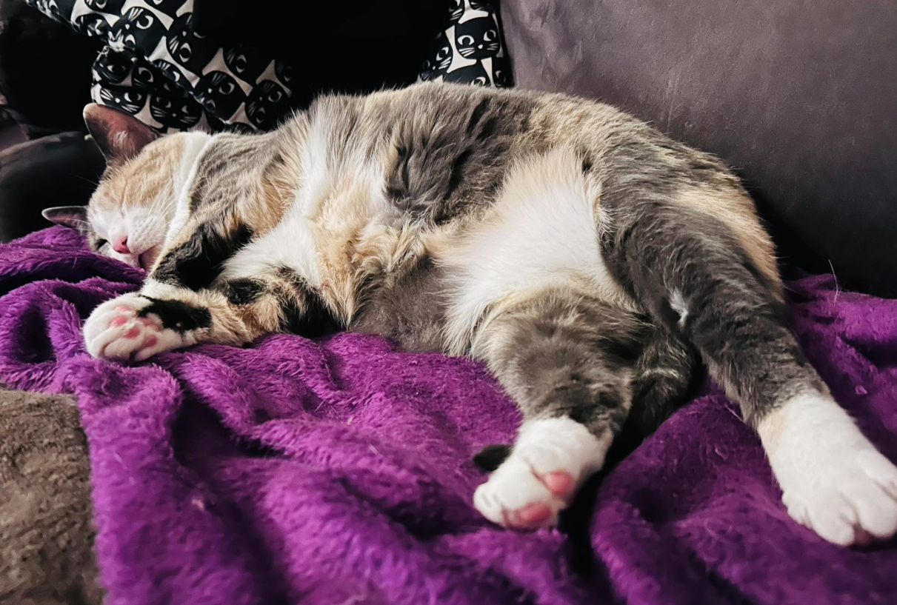
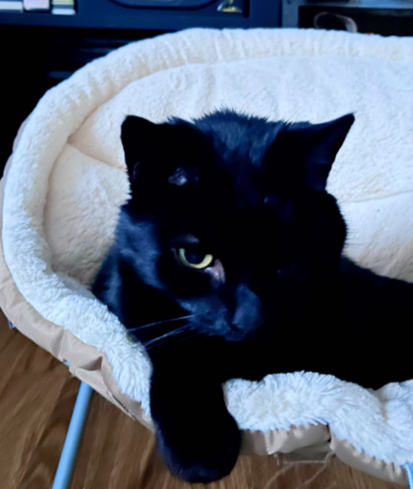
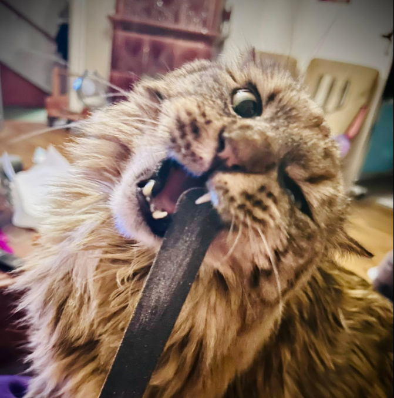
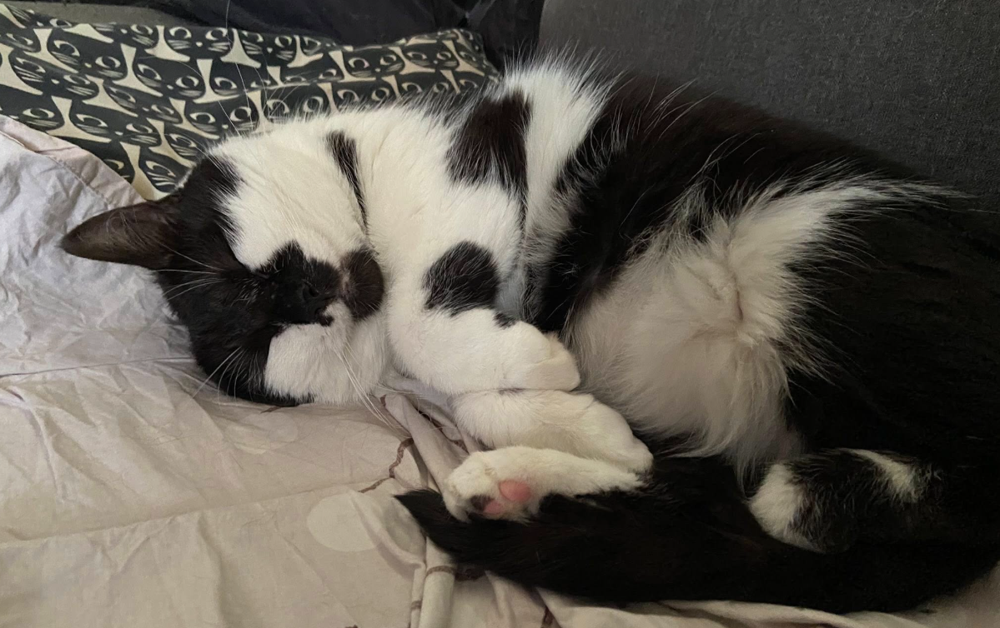
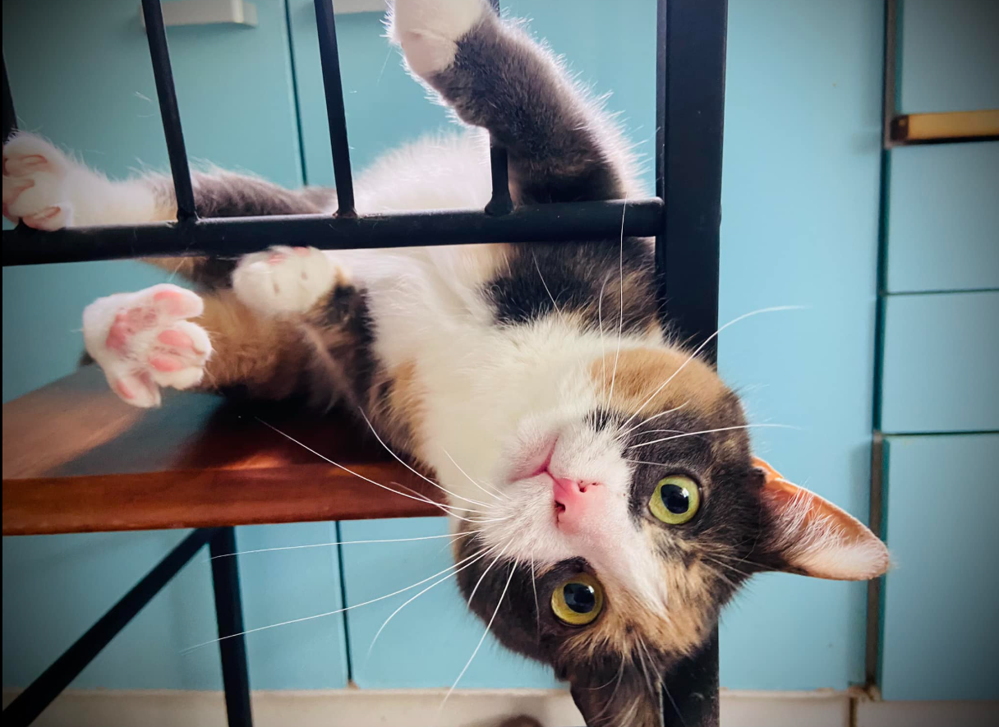
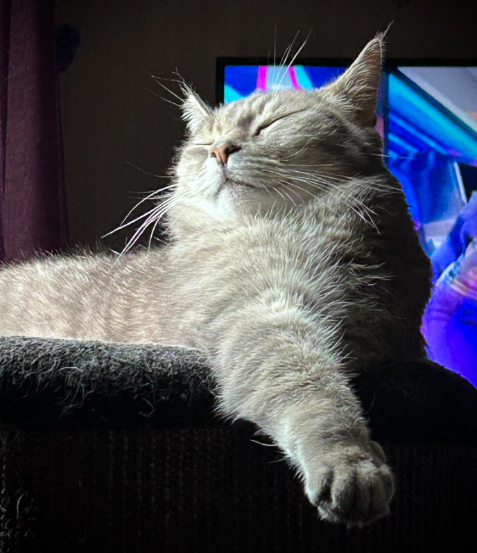

🐈⬛

Alice in Wonderland
Alice on iso ja pyöreä. Hän ei voi sille mitään. Geenit määrittelivät sen, että kasvoi todella hitaasti lyhyillä jaloillaan. Eläinkääri todennut terveeksi vaikkain hitaasti kehittyneeksi.. Sosiaalinen, mutta todella herkkä muutoksille. Eli ei kovia ääniä. Saa rapsuttaa massusta.
Alicen ja Tuhkan erottaa siitä, että Tuhka on pieni ja laiha kun taas Alice on iso pyöreä pallo. Muista Alicen kanssa, että nopeat ja äänekkäät liikket aiheuttavat hänelle pelkoa.

Leela
Bändin ainut yksi silmäinen. Silmä menetetty 5kk iässä klamydialle. Onneksi yksi silmä säästyi. Tämän takia saattaa yksiä ja aivastella. Vanhin ja rohkein. Todella itsevarma tyttö. Vaikka Leela tarjoaa massua niin ÄLÄ MISSÄÄN NIMESSÄ LAITA KÄTTÄSI MASSUUN. Jos niin teet saat isot haavat 😅

Lilith
Se pitkäkarvainen. Leelan paras ystävä. Lilithillä oli paha Giardia ja tämän takia on herkkä vatsa ja helposti turkki takussa vatsasta, jalaoista, hännästä ja bebun luota. On todella rohkea Leelan kanssa. Saa rapsuttaa massusta niin paljon kuin vaan jaksat.

Salem
Salem on todella herkkä muutoksille eikä ole muiden kissojen kanssa mikään kaveri. Yksinäinen kulkija. Hänet näet ehkä vasta sitten pidemmän ajan päästä ollessasi. Mutta kun Salem eli Mää uskaltautuu tulla niin saat rakkautta ja huomiota. Salem juttelee paljon ja siksi lempinimi Mää, koska juttelu kuulostaa hyvin määkimis tyyliltä.

Tuhka
Tuhka PRÖÖT on todella sosiaalinen ja hänen parhaita ystäviä ovat kaikki, mutta lemppareita Alice ja BAThery(leikissä). Hänen tärkein tuki on Leela. Sosiaalinen ja saa rapsuttaa massusta..

Vlad
Kuten Salem niin on myös Vlad todella leimaantunut ihmiseen eikä varsinaisesti kaipaa lajikumppania. Hän on ainoana poikana laumassa hiljainen ja herkkä. Vald on yleensä se viimeinen joka kaivautuu kolostaan näytille.

BAThery 🦇
BAThery 🦇 eli Bat-Bat. Hän on tämän lauman nuorimmainen. Nakupellenä syntynyt ja nyt kasvattanut talven aikana karvoitusta joka ei ole kylläkään mitään paksua. Äärettömän sosivaalinen ja aktiivinen. Rakastaa herkkuja ja häntä voi sylitellä.